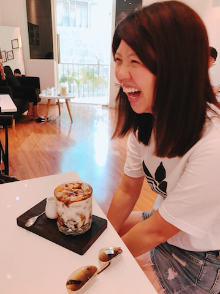

I am a User Experience Designer graduated from University of Michigan. My goal is to solve the complex problems through the user-centered design methods and the user studies. I enjoy to work with multifunctional team because I believe that the within diversity is the key point to make a meaningful design. My professional focus is aimed at providing user-friendly interactions on different devices, from mobile to websites.